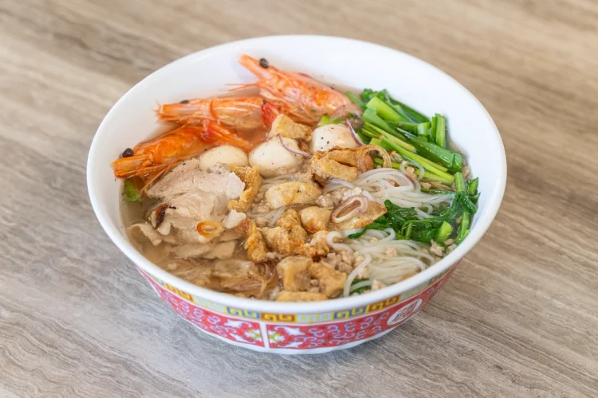

Hủ Tiếu Recipe

Ingredients for the Broth
- 2 lbs (900g) pork bones (neck bones or leg bones work well)
- 1 lb (450g) pork shoulder, sliced thinly
- 1 lb (450g) shrimp, peeled and deveined
- 1 onion, halved
- 4 cloves garlic, smashed
- 1 piece of dried squid or dried shrimp (optional, for extra flavor)
- Seasonings/flavoring: Salt and pepper, to taste, 1 tbsp fish sauce, 1 tbsp sugar,
Ingredients for the Noodles and toppings
- 1 lb (450g) hủ tiếu noodles (flat rice noodles) or substitute with rice vermicelli or pho noodles
- Veggies: Chopped green onions, cilantro, sliced lettuce, fried shallots, bean sprouts
- Lime wedges (squeeze in the broth for taste)
- Toppings: Chili slices, quail eggs, fish balls, and fried tofu
Directions
- Make the broth: Blanch the pork bones in boiling water for 3-5 minutes to remove impurities. Rinse under cold water and set aside. In a large pot, add the cleaned pork bones, pork shoulder, onion, garlic, and dried squid or shrimp (if using). Cover with water and bring to a boil. Lower the heat and simmer for about 1.5-2 hours. Skim off any foam or impurities that rise to the surface. Add sugar, fish sauce, salt, and pepper to taste. Adjust the seasoning as needed.
- Cook the noodles: Boil the noodles according to the package instructions until tender. Drain and rinse under cold water to prevent sticking.
- Cook the shrimp: In the last 5 minutes of cooking the broth, add the shrimp. Cook until they turn pink and are fully cooked. Remove and set aside.
- Prepare the toppings: Slice the cooked pork shoulder thinly. Wash and prepare bean sprouts, lettuce, and herbs
- Assemble the bowls: Divide the cooked noodles into serving bowls. Arrange the sliced pork, cooked shrimp, and optional toppings (e.g., quail eggs or fish balls) on top of the noodles. Ladle hot broth over the noodles and toppings.
- Garnish and serve: Garnish with bean sprouts, green onions, cilantro, fried shallots, and chili slices. Serve with lime wedges and additional fish sauce or chili sauce on the side